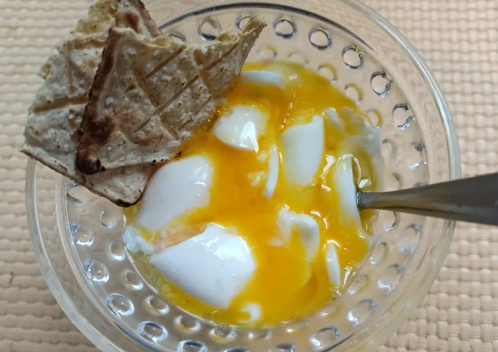

Huevos a la Copa

Description
My mom used to make this when we were little. I never got the chance to write down the recipe.
This is a recipe I found online that seems to be very similar. Other recipes I find tend to be
very fancy with a lot more ingredients.
In my mom's honor I leave this recipe in Spanish, untranslated. QEPD.
Ingredientes
- 2 huevos
- Agua
- Sal
- Aceite y pan
Pasos
- Importante que los huevos estén a temperatura ambiente.
Hervir un litro de agua, para que estén bien sumergidos.
Cuando hierve el agua colocar los huevos.
Con cronómetro (lo hace más competitivo) contar tres minutos exactos.
- Apagar el fuego, retirar los huevos y colocarlos en agua de la fría para
cortar la cocción.
- Abrir el huevo por un extremo y vaciar el contenido en una copa.
Condimentar y a disfrutar.